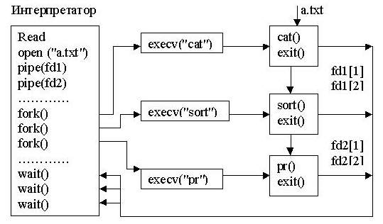

Моделирование работы интерпретатора
Практическое освоение средств управления ресурсами ОС UNIX на основе разработки программы, моделирующей работу
интерпретатора в плане создания процессов, реализующих команды в командной строке, их синхронизации и
взаимодействию по данным.
-
Изучить программные средства наследования дескрипторов файлов (системные вызовы dup(),
fcntl()).
-
Ознакомиться с заданием к лабораторной работе.
-
Выбрать набор системных вызовов, обеспечивающих решение задачи.
-
Для указанного варианта составить программу на языке Си, реализующую требуемые действия.
-
Отладить и оттестировать составленную программу, используя инструментарий ОС UNIX.
-
Защитить лабораторную работу, ответив на контрольные вопросы.
При выполнении операции перенаправления ввода-вывода важным моментом является наследование пользовательских дескрипторов,
осуществляемое с помощью системных вызовов dup() и fcntl().
Системный вызов dup() обрабатывает свой единственный параметр как пользовательский дескриптор
открытого файла и возвращает целое число, которое может быть использовано как еще один пользовательский дескриптор того
же файла. С помощью копии пользовательского дескриптора файла к нему может быть осуществлен доступ того же типа и с
использованием того же значения указателя записи-чтения, что и с помощью оригинального пользовательского дескриптора файла.
Системный вызов fcntl(), имеющий формат
int fcntl(int fd, char command, int argument);
выполняет действия по разделению пользовательских дескрипторов в зависимости от пяти значений аргумента command,
специфицированных в файле fcntl.h. Например, при значении второго аргумента, равного F_DUPFD,
системный вызов fcntl() возвращает первый свободный дескриптор файла, значение которого не меньше
значения аргумента argument. Этот пользовательский дескриптор файла должен быть копией
пользовательского дескриптора файла, заданного аргументом fd.
С помощью системных вызовов dup() и fcntl() пользовательские программы,
а также и интерпретатор команд Shell реализуют каналы и переназначение стандартного ввода и стандартного вывода на файл.
Пусть, например, некоторая программа prog читает данные из стандартного входного потока и выводит
результаты в стандартный выходной поток. Для того, чтобы та же программа читала данные из файла aa.txt,
а осуществляла вывод в файл bb.txt, необходимо выполнить:
#include <fcntl.h>
...............
int fd, fd2;
fd = open("aa.txt", O_RDONLY);
close(0);
fcntl(fd,F_DUPFD,0);
fd = open("bb.txt", O_WRONLY | O_CREAT);
close(1);
fcntl(fd2, F_DUPFD, 1);
execlp("prog", "prog", 0);
Интерпретатор Shell представляет собой обычную, с точки зрения пользователя, программу, которая в ходе своего функционирования
создаёт процессы, реализующие простые команды командного языка, выполняет перенаправление ввода-вывода, строит программные
каналы между командами и т.д. Например, схему обработки командной строки
cat < a.txt | sort | pr
интерпретатором команд, опуская детали, связанные с наследованием дескрипторов файлов, можно представить в виде:

Составить программу, моделирующую работу Shell-интерпретатора при обработке командной строки, указанной в варианте.
При реализации программы путём выдачи сообщений информировать обо всех этапах ее работы (создан процесс, выполнение
команды закончено и т.д.).
-
(cc pr1.c & cc pr2.c) && cat pr1.c pr2.c > prall.c.
-
wc -c < a.txt & wc -c < b.txt & cat a.txt b.txt | wc -c > c.txt.
-
who | wc -l & ps | wc -l.
-
tr -d "[p-z]" < a.txt | wc -c & wc -c < a.txt.
-
ls -la > a.txt & ps > b.txt; cat a.txt b.txt | sort.
-
ls -lisa | sort | wc -l > a.txt.
-
cat a.txt b.txt c.txt | tr -d "[a-i]" | wc -w.
-
ls -al | wc -l && cat a.txt b.txt > c.txt.
-
tr -d "[0-9]" < a.txt | sort | uniq > b.txt.
-
ls -al | grep "April" | wc -l > a.txt.